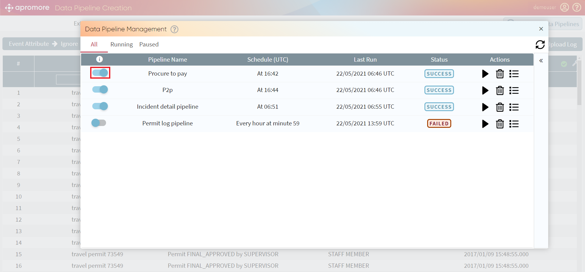

Schedule/Manage Data Pipeline
Create data pipeline allows to update logs automatically by scheduling. After scheduling a pipeline, the logs will be fetched directly from the database and transformed according to the set transformation.
We can also manage the scheduled pipelines.
Schedule pipeline
To schedule pipeline, go to the Load view and click on the Schedule pipeline button placed in the right corner under the Manage Data Pipelines button.
The Schedule Data pipeline window appears.
We can choose the frequency of the updates – hourly, daily, weekly, or monthly to extract, transform, and load event logs into Apromore.
To run pipeline instantly, tick the box Run pipeline now in addition to the scheduled time placed right beneath the frequency settings.
When frequency settings are complete, choose the Log name and Log destination and click on Schedule.
Manage pipeline
To check or edit scheduled pipelines, click on Manage Data Pipelines button placed in the right corner under the user’s details.
The Data pipeline Management window appears, displaying all the scheduling-related details next to the pipeline name: time/frequency of loads, status, last run.
Note
By default, the window shows all the pipelines. To see only Running or Paused ones, click on the corresponding section.
We can pause or unpause the pipeline by moving the pipeline activation slider next to the pipeline name.

To view the details of all the updates of the scheduled pipeline, click on
{kind=link}
Note
The status of the pipeline run might be either success or fail, where fail means that for some reason system wouldn’t able to run the scheduled pipeline successfully.
To delete the scheduled pipeline, click on
{kind=link}
{kind=link}
To close the Data Pipeline Management window, click on the “X” button in the upper right corner of the window.

{kind=link}